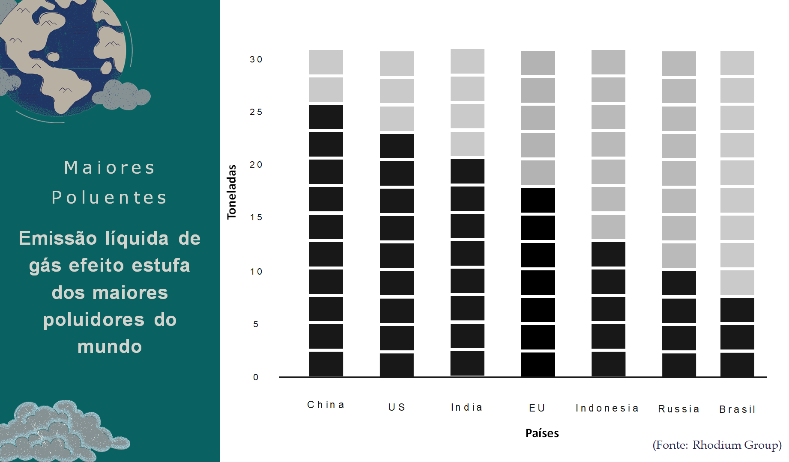
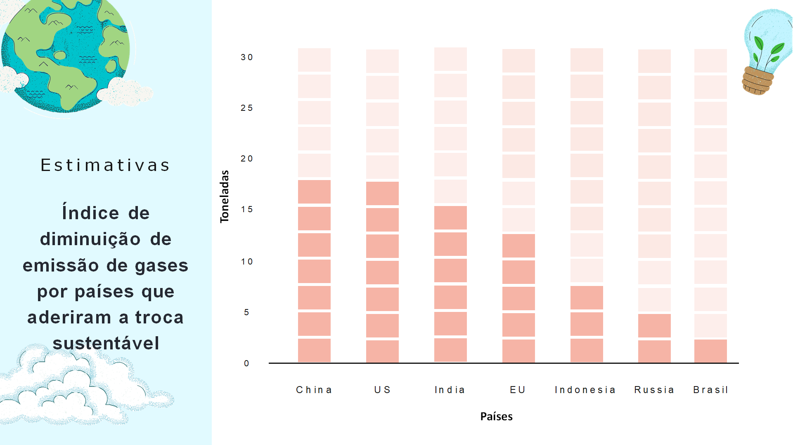

Objetivos da troca sustentável
O serviço visa quantificar as emissões de gases de efeito estufa (GEE) de uma empresa, organização, evento ou produção e, depois de quantificadas, será estudada a melhor forma de neutralizar todas essas emissões por meio de técnicas de compensação de carbono como o plantio de mudas ou créditos de carbono e isso irá variar de empresa para empresa. Assim, é possível neutralizar o impacto causado na atmosfera.
 Os serviços prestados pela troca sustentável:
- Quantificar os gases de efeito estufa emitidos pela organização;
- Compensar os gases quantificados;
- Promover a sustentabilidade e possibilitar o investimento em marketing verde.
Todas as atividades que emitem carbono, como o consumo de energia elétrica e o transporte por exemplo, são consideradas no cálculo dos gases emitidos pela organização.
Após encontrar e mapearmos as emissões de carbono, são feitos cálculos para a neutralização, que pode ser realizada por meio do plantio de árvores ou por créditos de carbono.
A cada 7 árvores, é possível sequestrar 1 tonelada de carbono nos seus primeiros 20 anos de idade. Com base nesta média é determinada a quantidade de árvores que serão necessárias para neutralizar as emissões dos Gases de Efeito Estufa.